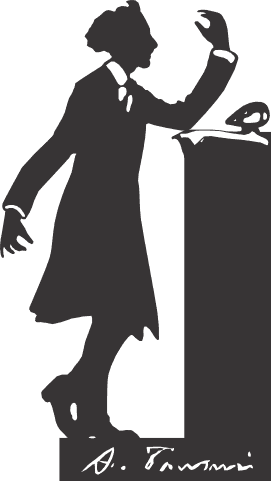

Литературная премия Андрея Белого
Премия Андрея Белого была учреждена в 1978 г. и стала первой независимой литературной наградой в России. Премия Андрея Белого, старейшая независимая премия России.
Премия Андрея Белого была учреждена в 1978 г. и стала первой независимой литературной наградой в России. Премия Андрея Белого, старейшая независимая премия России.
Премия присуждена в пяти номинациях.
Лауреатом в номинации «Поэзия» стал поэт, прозаик, литературовед и критик Данила Давыдов за книгу стихов «Ненадежный рассказчик», которую можно считать примером того, как филологическое знание и занятия литературной критикой позволяют поэту сохранять свой уникальный голос, избегая соблазнов литературной моды.
В номинации «Проза» лауреатом премии стал художник Илья Долгов, работающий и живущий в Кронштадте, за работу «#Сциапоника, работа теней. Поэтический и практический гид для грациозного растениеводства», где отчет о проведении художественного проекта превращается в грациозную медитативную прозу.
Надежда Плунгян была объявлена лауреатом в номинации «Гуманитарные исследования» за многолетний проект по изучению роли женщины в русском искусстве первой половины ХХ века. Результатом этого проекта стала книга «Рождение советской женщины. Работница, крестьянка, летчица, «бывшая» и другие в искусстве 1917-1939 годов», отмеченная премией.
В номинации «Литературные проекты и критика» премией отмечен литературный журнал «Флаги» и его инициатор и главный редактор Михаил Бордуновский. Этот журнал создан самым молодым поколением русской литературы и за несколько лет успел предложить новый взгляд на современную поэзию, став одним из лидеров поэтической периодики.
Специальная премия «За заслуги перед русской литературой» была присуждена филологу Татьяне Никольской, которая в течение многих десятилетий занимается изучением русского авангарда и его связей с авангардом грузинским. Работы Татьяны Никольской уже давно вошли в фонд филологической классики и стали незаменимы для всех, кто занимается русской литературой первой четверти ХХ века.
Лауреатом в номинации «Поэзия» стал поэт, прозаик, литературовед и критик Данила Давыдов за книгу стихов «Ненадежный рассказчик», которую можно считать примером того, как филологическое знание и занятия литературной критикой позволяют поэту сохранять свой уникальный голос, избегая соблазнов литературной моды.
В номинации «Проза» лауреатом премии стал художник Илья Долгов, работающий и живущий в Кронштадте, за работу «#Сциапоника, работа теней. Поэтический и практический гид для грациозного растениеводства», где отчет о проведении художественного проекта превращается в грациозную медитативную прозу.
Надежда Плунгян была объявлена лауреатом в номинации «Гуманитарные исследования» за многолетний проект по изучению роли женщины в русском искусстве первой половины ХХ века. Результатом этого проекта стала книга «Рождение советской женщины. Работница, крестьянка, летчица, «бывшая» и другие в искусстве 1917-1939 годов», отмеченная премией.
В номинации «Литературные проекты и критика» премией отмечен литературный журнал «Флаги» и его инициатор и главный редактор Михаил Бордуновский. Этот журнал создан самым молодым поколением русской литературы и за несколько лет успел предложить новый взгляд на современную поэзию, став одним из лидеров поэтической периодики.
Специальная премия «За заслуги перед русской литературой» была присуждена филологу Татьяне Никольской, которая в течение многих десятилетий занимается изучением русского авангарда и его связей с авангардом грузинским. Работы Татьяны Никольской уже давно вошли в фонд филологической классики и стали незаменимы для всех, кто занимается русской литературой первой четверти ХХ века.
